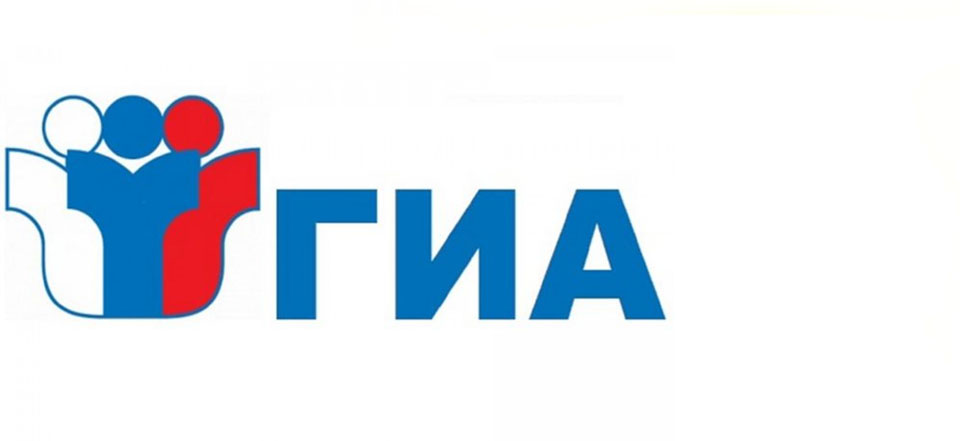

Организация подачи заявления на участие в ГИА
Итоговое собеседования проводится во вторую среду февраля. Продолжительность проведения итогового собеседования для каждого участника итогового собеседования составляет в среднем 15 минут.
Для участников итогового собеседования с ОВЗ, участников итогового собеседования – детей-инвалидов и инвалидов продолжительность проведения итогового собеседования увеличивается на 30 минут.
В продолжительность итогового собеседования не включается время, отведенное на подготовительные мероприятия (приветствие участника итогового собеседования, внесение сведений в ведомость учета проведения итогового собеседования в аудитории, инструктаж участника собеседования экзаменатором-собеседником по выполнению заданий КИМ до начала процедуры и др.).
- Выбранные участниками ГИА учебные предметы, форма (формы) для участников ГВЭ) и язык, на котором они планирует сдавать экзамены (для обучающихся, выбравшим прохождение ГИА по родному языку и (или) родной литературе), а также сроки участия в ГИА указываются ими в заявлении, которое подается в образовательную организацию до 1 марта включительно. Рекомендуемая форма заявления на участие в ОГЭ и ГВЭ представлена в приложении 4 настоящих Методических рекомендаций. При подаче заявления на участие в ГВЭ участнику ГИА необходимо указать форму сдачи экзамена (устная или письменная).
При выборе письменной формы ГВЭ по русскому языку участникам ГИА необходимо дополнительно указать форму проведения экзамена: сочинение/изложение с творческим заданием/диктант. Участник может выбрать только ту форму проведения, которая доступна для определенной категории лиц, к которой он относится.
Заявления подаются участниками ГИА лично на основании документов, удостоверяющих личность, или их родителями (законными представителями) на основании документов, удостоверяющих, или уполномоченными лицами на основании документов, удостоверяющих личность, и доверенности (оформленной в установленном порядке). Обучающиеся с ограниченными возможностями здоровья при подаче заявления предъявляют копию рекомендаций ПМПК, а обучающиеся дети-инвалиды и инвалиды - оригинал или заверенную копию справки, подтверждающей факт установления инвалидности, выданной федеральным государственным учреждением медико-социальной экспертизы, а также копию рекомендаций ПМПК в случаях, учитывающих состояние их здоровья, особенности психофизического развития ГЭК вправе принимать решение о допуске к сдаче ГИА в дополнительные сроки (резервные сроки) обучающихся, не имеющих возможности участвовать в ГИА в основной период проведения ГИА по религиозным убеждениям, а также считать такие причины уважительными. Участник ГИА вправе изменить перечень указанных в заявлении экзаменов, а также форму ГИА (для участников ГВЭ) и сроки участия в ГИА только при наличии у них уважительных причин (болезни или иных обстоятельств), подтвержденных документально.
Итоговое собеседования проводится во вторую среду февраля. Продолжительность проведения итогового собеседования для каждого участника итогового собеседования составляет в среднем 15 минут.
Для участников итогового собеседования с ОВЗ, участников итогового собеседования – детей-инвалидов и инвалидов продолжительность проведения итогового собеседования увеличивается на 30 минут.
В продолжительность итогового собеседования не включается время, отведенное на подготовительные мероприятия (приветствие участника итогового собеседования, внесение сведений в ведомость учета проведения итогового собеседования в аудитории, инструктаж участника собеседования экзаменатором-собеседником по выполнению заданий КИМ до начала процедуры и др.).